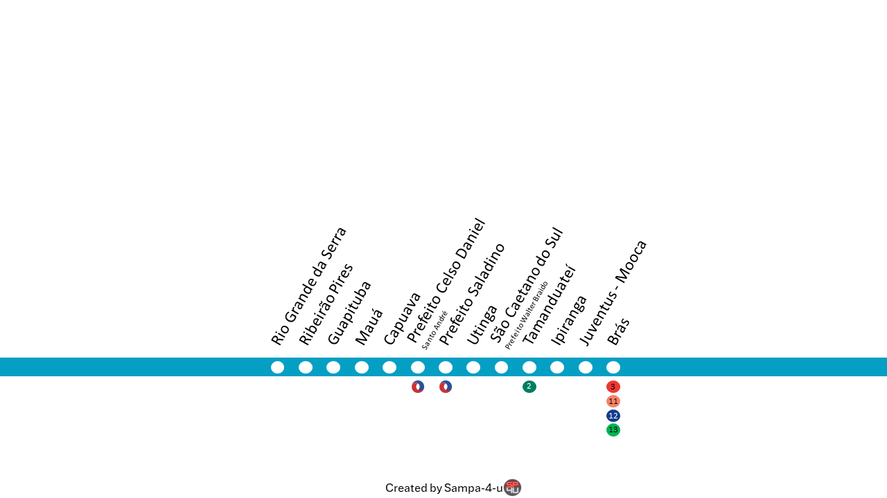

🌓
Página Inicial
Linhas - SPTrans
Linhas - EMTU/ARTESP
Histórico Alteração de Linhas
Qualidade do Ar
Origem e Destino
Demanda/Estação
Mapa
Linha 10 - Turquesa
Informações sobre a Operação - Carregando...
CPTM

Voltar para a Página Inicial